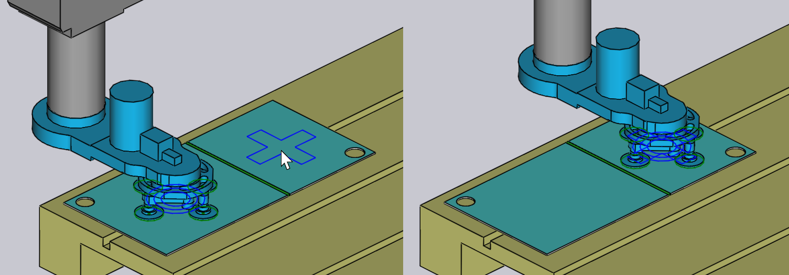

การหยิบจากพาเลท
เมื่อใช้กริปเปอร์สูญญากาศหรือกริปเปอร์แม่เหล็ก แผ่นเปล่าจะถูกหยิบจาก_พาเลท_ พารามิเตอร์ที่มีผลต่อกระบวนการนี้ ได้แก่
-
ตำแหน่งของพาเลทในเซลล์เครื่องจักร
-
ตำแหน่งและทิศทางของกองชิ้นงานบนพาเลท
-
ตำแหน่งและทิศทางของกริปเปอร์สูญญากาศบนชิ้นงาน
-
การตั้งค่าถ้วยดูดของกริปเปอร์ (ถ้วยใดเปิด/ปิด และชนิดของถ้วยที่ติดตั้งในแต่ละช่อง)
-
พื้นที่ของชิ้นงานที่ถูก_จับภาพ_โดยกล้องบนหุ่นยนต์ และใช้เป็นข้อมูลอ้างอิงสำหรับการปรับตำแหน่งชิ้นงาน
แผงควบคุมที่ใช้แก้ไขการตั้งค่าทั้งหมดนี้จะแสดงอยู่ด้านล่าง ซึ่งทั้งหมด เชื่อมโยงกันด้วยลิงก์การนำทางขึ้น/ลงไปยังแผงอื่นๆ ตามลำดับขั้นตอน อย่างเป็นระบบ:

แผงนี้สามารถเข้าถึงได้ง่ายโดยการคลิกที่วัตถุต่างๆ ในการจำลองตามที่แสดงในภาพด้านบน:
-
หากต้องการเปิดพาเนล Pallet ให้คลิกบนพาเลท
-
หากต้องการแก้ไขกองชิ้นงานบนพาเลท (พาเนล Pickup) ให้คลิกบนแผ่นเปล่า ที่อยู่บนพาเลท
-
เพื่อแก้ไขตำแหน่งกริปเปอร์บนแผ่นเปล่า (พาเนล Gripper) ให้คลิกบนกริปเปอร์
-
หากต้องการแก้ไขการตั้งค่าถ้วยดูดของกริปเปอร์ (พาเนล Suction) ให้คลิกบนถ้วยดูด
-
หากต้องการแก้ไขตำแหน่ง_การถ่ายภาพ_ (ใช้โดยระบบจดจำตำแหน่งละเอียด) ให้คลิกที่กล้อง
พาเนล Pallet
พาเนล Pallet ใช้เลือกพาเลทและวางตำแหน่งในเซลล์ คุณ สามารถเปิดพาเนลนี้ได้เพียงคลิกที่พาเลท; Flux จะปรับตำแหน่ง เส้นเวลาในซิมูเลชันเพื่อให้หุ่นยนต์อยู่ในจุดที่จะหยิบชิ้นงาน จากพาเลท

-
ใช้ตัวเลือก Name เพื่อเลือกพาเลทอื่น โดยปกติจะแสดง เฉพาะพาเลทที่ใช้ได้กับแผ่นเปล่านี้ แต่คุณสามารถปิดการตรวจสอบ Filtered เพื่อแสดงพาเลททั้งหมด
-
การวางเมาส์เหนือชื่อในรายชื่อจะแสดงสรุปข้อมูล ของพาเลทดังกล่าวพร้อมภาพย่อ:

-
ใช้ช่องป้อนข้อมูล Position เพื่อตำแหน่งพาเลทในแกน Z และ X (ในพิกัดของเซลล์) และใช้ช่องป้อนข้อมูล Angle เพื่อหมุนพาเลท เมื่อเลื่อนหรือหมุนพาเลท กองชิ้นงานบนพาเลทและ กริปเปอร์/หุ่นยนต์จะเคลื่อนตาม
-
ใช้ปุ่ม Next และ Prev เพื่อเลื่อน ไปยังพาเลท_อื่นๆ_ ในเซลล์ เช่น พาเลท ที่ใช้สำหรับการวางชิ้นงาน
-
ใช้ปุ่มนำทาง Pickup เพื่อแก้ไขตำแหน่งของ กองชิ้นงานบนพาเลท
-
ใช้ปุ่ม Save Config ภายใต้ส่วน Advanced เพื่อบันทึกการตั้งค่าเซลล์นี้ (รวมถึงพาเลททั้งหมด) เป็นค่าเริ่มต้นสำหรับ เครื่องนี้
แผง Pickup
แผง Pickup ใช้สำหรับแก้ไขตำแหน่งของกองชิ้นงานบนพาเลท คุณสามารถเปิดแผงนี้ได้โดยตรงโดยคลิกที่กองแผ่น Blank ที่วางอยู่บนพาเลท (คุณยังสามารถเข้าถึงได้โดยใช้ลิงก์ Pickup จากแผง Pallet)

-
ใช้ช่องป้อนข้อมูล Position เพื่อตั้งตำแหน่งกองชิ้นงาน บนพาเลท โดยพิกัดดังกล่าวจะกำหนดจุดกึ่งกลางของชิ้นงานในแกน Z และ X เมื่อเทียบกับมุมของพาเลทและอยู่ในระบบพิกัดเฉพาะของพาเลท
-
ใช้ช่องป้อนข้อมูล Angle เพื่อหมุนชิ้นงานบนพาเลท
-
ใช้สวิตช์ Flip part เพื่อพลิกชิ้นงาน หมายเหตุ: โดยปกติแล้วจะต้องมีการทำงาน regripping เพิ่มเติม ก่อนที่จะสามารถประมวลผลการดัดครั้งแรกได้ (TecZone Bend จะเพิ่มการทำงานนี้ให้ โดยอัตโนมัติ)
-
ใช้ลิงก์ Camera เพื่อสลับไปที่แผง Camera ซึ่งคุณสามารถ ตั้งค่าขั้นตอนการรู้จำภาพของการหยิบชิ้นงานได้
-
ลิงก์ Waypoints จะเปิดตัวแก้ไข Waypoints ซึ่งคุณสามารถปรับแต่งเส้นทางการเคลื่อนที่ของหุ่นยนต์ในระหว่างการหยิบชิ้นงานได้
-
ลิงก์ RG-Stations จะเปิดแผง Regrip Station ซึ่งคุณสามารถกำหนด ตำแหน่งของสถานี Regrip ในระหว่างการหยิบชิ้นงานได้
เมื่อชิ้นงานถูกเคลื่อนที่ไปบนพาเลท กริปเปอร์จะยังคง_ยึดติด_กับชิ้นงาน และหุ่นยนต์จะเคลื่อนที่ตาม
พาเนล Gripper
พาเนล Gripper ใช้สำหรับเลือกกริปเปอร์แบบอื่น หรือเปลี่ยนตำแหน่งและทิศทางที่กริปเปอร์ใช้หยิบชิ้นงาน

-
ใช้ตัวเลือก Name เพื่อเลือกกริปเปอร์อื่น โดยปกติแล้ว ระบบ จะแสดงเฉพาะกริปเปอร์ที่เหมาะสมกับชิ้นงานนี้ (อ้างอิงจากขนาดและน้ำหนักบรรทุกของกริปเปอร์) แต่คุณสามารถปิดการตรวจสอบ Filtered ได้ จากนั้นกริปเปอร์ทั้งหมด จะถูกแสดงในรายการ
-
การวางเมาส์เหนือชื่อในรายชื่อกริปเปอร์จะแสดงสรุปข้อมูล ของกริปเปอร์ดังกล่าวพร้อมภาพย่อ:

-
ใช้ช่องป้อนข้อมูล Position เพื่อเลื่อนตำแหน่งจุดกึ่งกลางของกริปเปอร์ เมื่อเทียบกับจุดกึ่งกลางของชิ้นงาน และใช้ช่องป้อนข้อมูล Angle เพื่อหมุนกริปเปอร์เมื่อเทียบกับทิศทางของชิ้นงาน
-
ใช้ลิงก์ Suction เพื่อเข้าสู่_การแก้ไขแบบละเอียด_ของกริปเปอร์ (เลือกถ้วยดูดสูญญากาศที่แตกต่างกันและเปิด/ปิดการทำงานของถ้วยดูด)
-
ปุ่ม Set Grip Plane ใช้สำหรับตั้งตำแหน่งกริปเปอร์ บนระนาบอื่น โดยปกติแล้วจะใช้ระนาบที่ใหญ่ที่สุดในโมเดลเพื่อตั้งตำแหน่งกริปเปอร์ หากต้องการเปลี่ยน ให้คลิกปุ่มนี้ จากนั้น ให้คลิกที่ระนาบที่ต้องการให้กริปเปอร์ตั้งอยู่:
 -
ปุ่ม Use Jaw Gripper ใช้สำหรับสลับการใช้ชิ้นงานนี้กับ ตัวจ่ายชิ้นงานและกริปเปอร์แบบขากรรไกร ขั้นตอนทั้งหมด ของรอบการดัดตั้งแต่การหยิบจนถึงการวางจะถูกคำนวณใหม่โดยใช้กริปเปอร์แบบขากรรไกร gripper[1]
คำเตือนเกี่ยวกับถ้วยดูด
หากกริปเปอร์ถูกเลื่อนจนถ้วยดูดบางส่วนออกนอกแผ่น หรือวางทับบนรูของชิ้นงาน ถ้วยดูดดังกล่าวจะถูกไฮไลต์และจะแสดงข้อผิดพลาด
ในคอลัมน์ Pickup ของตัวนำทางตามภาพด้านล่าง:

เมนู Actions

ปุ่ม Actions ใช้สำหรับเรียกเมนูที่มีการทำงานที่เป็นประโยชน์ กับกริปเปอร์:
-
Auto-place: Shift พยายามจัดตำแหน่งกริปเปอร์ใหม่ให้อยู่เหนือชิ้นงาน เพื่อให้ถ้วยดูดทั้งหมดอยู่ภายในชิ้นงานและไม่อยู่เหนือรู (ถ้าเป็นไปได้)
-
Turn off leaking cups: ปิดการทำงานของถ้วยดูดทั้งหมด ที่อยู่เหนือรูหรืออยู่นอกขอบเขต part[2]
-
Turn on all cups: เปิดการทำงานของถ้วยดูดทั้งหมดที่ถูกปิดอยู่่
-
Save Config: หากคุณ_กำหนดค่า_กริปเปอร์โดยการปิด หรือถอดถ้วยดูดบางส่วนออกหรือเปลี่ยนความยาวหรือมุมของแขน (สำหรับ MultiGrippers ที่สามารถเปลี่ยนรูปร่างได้) คุณสามารถบันทึกการกำหนดค่าใหม่ของ กริปเปอร์โดยใช้ชื่อใหม่เพื่อใช้งานซ้ำได้ง่าย
-
Export Gripper: บันทึกกริปเปอร์ปัจจุบันเป็นไฟล์ .fxbgrip ซึ่งสามารถนำเข้าไปยังการติดตั้ง TecZone Bend อื่นได้ วิธีนี้มีประโยชน์ หากคุณได้นำเข้ากริปเปอร์แบบกำหนดเองและต้องการแชร์ให้กับการติดตั้งอื่น
แผง Suction
แผง Suction ใช้สำหรับกำหนดโครงร่างการจัดวางถ้วยดูดสูญญากาศของกริปเปอร์ คุณสามารถ เปิดแผงนี้ได้โดยการคลิกโดยตรงบนถ้วยดูดสูญญากาศ หรือโดยการเลือกที่ลิงก์ Suction จากแผง Gripper

-
ใช้ตัวเลือก Cup # เพื่อเลือกถ้วยดูดสูญญากาศเฉพาะใน กริปเปอร์หรือใช้ปุ่ม Next และ Prev เพื่อเลื่อนไปยัง ถ้วยดูดสูญญากาศอื่นๆ ถ้วยดูดสูญญากาศที่เลือกจะถูกไฮไลต์เป็นสีน้ำเงิน และสามารถแก้ไขได้
-
สำหรับถ้วยดูดสูญญากาศแต่ละตัว คุณสามารถตั้งค่า State เป็น On, Off หรือ Removed ได้ ดูคำอธิบายด้านล่างสำหรับรายละเอียดเพิ่มเติม
-
ใช้แผง Type เพื่อเปลี่ยนไปใช้ถ้วยดูดสูญญากาศชนิดอื่น โดยปกติแล้ว จะมีการเปลี่ยนถ้วยดูดสูญญากาศทั้งหมดในกริปเปอร์ไปเป็นชนิดใหม่ แต่คุณยังสามารถ ผสมผสานถ้วยดูดสูญญากาศต่างชนิดกันได้ โดยปิดปุ่ม Change All แล้วจึง เปลี่ยนถ้วยดูดสูญญากาศ (หมายเหตุ: เมื่อคุณทำเช่นนี้ การเลือกถ้วยดูดสูญญากาศจะถูกจำกัด เนื่องจากถ้วยดูดสูญญากาศทั้งหมดที่ติดตั้งบนโครงกริปเปอร์ต้องมี ความสูงการทำงานเท่ากัน) ภาพด้านบนแสดงถ้วยดูดสูญญากาศสองตัวที่ถูกแทนที่ด้วยขนาดเล็กกว่า (SAXM50 แทน SAXM80 ซึ่งเป็นค่าเริ่มต้น)
-
ใช้ปุ่ม Reset เพื่อคืนค่ากริปเปอร์กลับสู่สภาพเดิม เปิดถ้วยดูดสูญญากาศทั้งหมด และรีเซ็ตกลับไปใช้ ชนิดถ้วยดูดสูญญากาศเริ่มต้นที่กำหนดไว้ในกริปเปอร์
สถานะเริ่มต้นของถ้วยดูดสูญญากาศคือ On ซึ่งหมายถึงถ้วยดูดสูญญากาศ เชื่อมต่อกับท่อสุญญากาศและช่วยในการยก
หากถ้วยดูดสูญญากาศอยู่เหนือรูในชิ้นงาน คุณสามารถเปลี่ยนสถานะเป็น ปิด ได้ ซึ่งหมายถึงไม่มีการดูดสุญญากาศ (ซึ่งจะลดแรงยกของกริปเปอร์และเปลี่ยนจุดศูนย์กลางแรงยก ซึ่ง Flux จะนำมาคำนวณตรวจสอบความสามารถในการยกของกริปเปอร์) โปรดทราบว่า ถ้วยดูดยังคงติดตั้งอยู่บนโครงและมีส่วนในการตรวจสอบการชน Flux แสดง ถ้วยดูดสูญญากาศที่ปิดการทำงานเป็นเส้นโครงดังที่เห็นในภาพด้านบน ซึ่งมีถ้วยดูดสองตัวถูกปิดการทำงาน
สุดท้าย คุณสามารถตั้งค่าถ้วยดูดสูญญากาศเป็น Removed ได้ ซึ่งหมายถึงถ้วยดูดถูกถอดออกจาก โครงในเครื่องจริง โดยจะไม่มีแรงยกจากถ้วยดูดนี้ และจะไม่ก่อให้เกิดการชน ซึ่งอาจมีประโยชน์หากถ้วยดูดตกลงบนบริเวณที่ขึ้นรูปแล้ว หรือทำให้เกิดการชนกับดายหรือโต๊ะเครื่องจักรระหว่างการทำงาน
แผง Camera
ขั้นตอนการหยิบชิ้นงานต้องมีการถ่ายภาพหนึ่งภาพหรือมากกว่าด้วยกล้อง และระบบประมวลผลภาพจะใช้ภาพนี้เพื่อประมาณตำแหน่งที่แน่นอน ของชิ้นงานบนพาเลท การคลิกที่กล้องซึ่งติดตั้งบนหุ่นยนต์หรือการเลือกปุ่มนำทาง Camera จากแผง Pickup จะเปิดแผง Camera Flux จะจัดตำแหน่ง การจำลองให้หุ่นยนต์อยู่ในท่าที่ต้องการเพื่อถ่ายภาพ:
-
ใช้รายการ Index (หรือปุ่ม Next และ Prev) เพื่อเลื่อนไปยังภาพการจดจำรายละเอียดต่างๆ ที่ใช้สำหรับชิ้นงานนี้ เมื่อคุณทำเช่นนี้ Flux จะแสดงเส้นขอบสีส้มที่ระบุโซนการจดจำ ภาพบนชิ้นงาน (ดูภาพด้านบน)
-
ใช้ช่องป้อนข้อมูล Position เพื่อปรับตำแหน่งโซนนี้ในแกน Z และ X เพื่อรวมคุณลักษณะที่น่าสนใจซึ่งช่วยปรับปรุงความแม่นยำ ในการจดจำ (เช่น มุม รูเล็ก รอยบาก)
-
ใช้ปุ่ม Add เพื่อเพิ่มภาพจดจำเพิ่มเติม (สูงสุด 4 ภาพ) และใช้ปุ่ม Remove เพื่อลบ ภาพจดจำปัจจุบัน ระหว่างการจำลองขั้นตอนการหยิบชิ้นงาน Flux จะแสดงหุ่นยนต์ เคลื่อนไปยังพื้นที่จดจำแต่ละจุดโดยกล้องจะหันลงและหยุด เพื่อถ่ายภาพ
หากเปิดสวิตช์ Use backlight table ชิ้นงาน จะถูกย้ายไปยังโต๊ะที่มีการให้แสงสว่างก่อนที่กล้องจะใช้ ถ่ายภาพ ซึ่งช่วยเพิ่มความคมชัดและเป็นประโยชน์สำหรับชิ้นงานที่มีการสะท้อนแสงสูง TecZone Bend เพิ่มโต๊ะให้แสงด้านหลังและวางตำแหน่งไว้ใกล้พาเลทยกชิ้นงานโดยอัตโนมัติ แต่คุณสามารถกำหนดตำแหน่งใหม่ได้โดยการคลิกที่โต๊ะ: